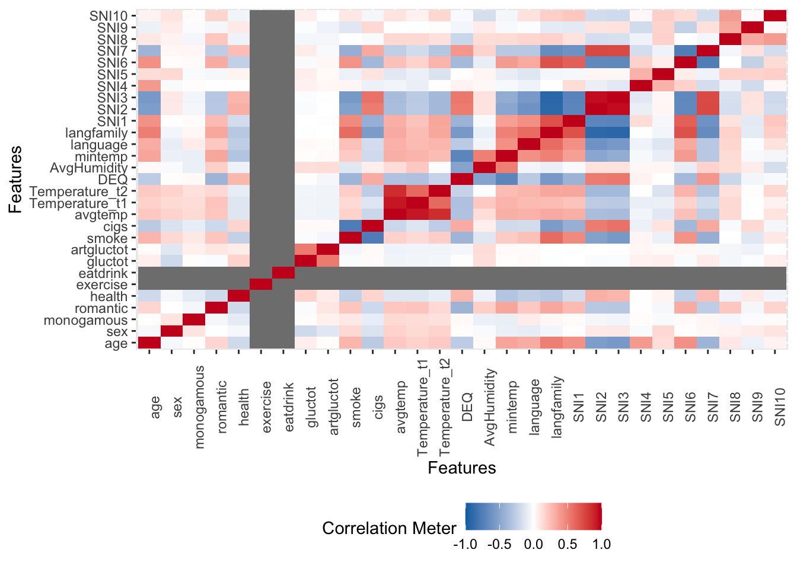

6 第六讲：如何探索数据: 描述性统计与数据可视化基础
6.1 描述性统计
本节课主要讲述探索性数据分析和数据可视化。 探索性数据分析是数据科学中的一个重要概念，可以帮助我们发现数据中的规律和问题。 在传统的心理学中，我们通常会清楚地知道要进行什么样的分析，但是在数据科学中，可能面临的是一个未知的数据集，我们不知道其中的规律和数据的结构。因此，探索性数据分析非常重要。我们还将介绍数据可视化的方法，它可以帮助我们更好地理解数据。
6.1.1 Part1-探索性数据分析
在进行数据分析时，如果数据结构不清晰，甚至不确定数据是否干净，那么探索性数据分析（EDA）就变得非常重要。EDA的目的是在不确定数据结构和分析方法的情况下，通过描述和可视化等方式初步了解数据，从而帮助我们决定下一步使用何种统计方法或数据分析方法。在现在的大数据时代，EDA已经成为数据科学家们非常惯用的数据分析方法。 进行EDA时，需要了解数据的基本信息，比如数据的列数、变量类型、变量值的范围以及变量之间的关系等。
（1）准备工作：安装包并运行+读取数据
# 检查是否已安装 pacman
if (!requireNamespace("pacman", quietly = TRUE)) {
install.packages("pacman") } # 如果未安装，则安装包
#更简洁的代码可以是这样
if (!require("pacman")) install.packages("pacman") ## Loading required package: pacman# 加载所需要的R包
pacman::p_load("tidyverse")
# 读取数据，并命名数据集
df.pg.raw <- read.csv("./data/penguin/penguin_rawdata.csv",
header = TRUE, sep=",", stringsAsFactors = FALSE)
df.mt.raw <- read.csv('./data/match/match_raw.csv',
header = T, sep=",", stringsAsFactors = FALSE)
#比如：human-penguin-project的这个数据集叫做df.pg.raw，这是原始的数据。match的数据集叫df.mt.raw。（2）了解相关列（名称以及变量意义）
## [1] "Date" "Prac" "Sub" "Age" "Sex" "Hand"
## [7] "Block" "Bin" "Trial" "Shape" "Label" "Match"
## [13] "CorrResp" "Resp" "ACC" "RT"（2-1）查看总体情况 如果需要了解常用的描述数值的统计量，如平均值中位数标准差等（即集中量数和差异量数等），可以使用psych这个包（主要用于问卷分析）。这个包里面有个describe函数，是用来描述数据大体情况的。Bruce R包中的describe函数，也可以帮助我们描述数据情况。
（2-2）查看特定值
如果想知道变量的平均数、中位数和标准差等统计量，在数据框中，每个变量（即列）都有一个 n 表示行数，均值、标准差、中位数等常用的描述数据的值也会显示出来。如果想提取这些值，可以使用 summarize() 函数。例如，可以使用管道将数据框作为输入，然后使用 summarize() 函数来计算某个特定变量（例如 RT）的均值、标准差和行数。也可以找到自己感兴趣的变量的值。
# 使用dplyr包中的summarise()函数
df.mt.raw %>%
summarise(mean_RT = mean(RT),
sd_RT = sd(RT),
n_values = n())## mean_RT sd_RT n_values
## 1 0.7149504 0.1508394 25920# summarise函数不会忽略缺失值，如果计算的列中有缺失值，则会有报错。需要注意的是，许多汇总数据的函数（例如均值或方差）**不会自动忽略缺失值**，因此需要在计算均值时添加一个参数（例如 `na.rm = TRUE`）来忽略缺失值。在使用 `mean()` 函数时，可以使用 `?mean` 命令来查看具体的参数输入。总之，可以使用描述性统计指标（例如均值和标准差）来了解数据框的情况。
6.1.2 Part2-数据可视化-ggplot2的基本使用
6.1.2.1 了解ggplot2
ggplot2是一种图形语法，它的核心是用图层来描述和构建图形。可以将数据映射到不同的图层中，然后将这些图层叠加起来形成最终的图形。所谓gg源于“grammar of graphics”，即图形语法。 比如，可以用ggplot2来绘制被试的正确率情况。可以从这个包中调用名为ggplot的函数，然后将数据框作为参数传入。 aes(Aesthetics)是一个映射关系，它决定了如何将数据映射到图形空间中，并选择使用什么样的几何图形进行可视化。在ggplot2中，可以选择使用不同的几何图形，比如条形图bar。
ggplot2::ggplot(data=df.mt.raw, # 指定数据
aes(x=ACC)) + # 确定映射到x轴的变量
geom_bar() + # 绘制直方图
theme_classic() # 设定绘图风格
6.1.2.2 练习
可以使用数据来练习ggplot2绘图。首先，先加载tidyverse库，然后读取数据，载入数据到df.mt.row中，最后使用ggplot2绘制图形。 由于前面的课程已经讲解了如何使用library和读取数据，因此这节课是基于前面的数据处理知识来讲解的。 可以使用一个大的data frame，其中有很多行和列，其中一个是acc，它有很多值，例如-1、0、1。 （1）首先，使用一个命令来指定数据集，即以data frame作为输入，然后使用data参数和aes参数将数据映射到图层上。
ggplot2::ggplot(data=df.mt.raw, # 指定数据
aes(x=ACC)) + # 确定映射到x轴的变量
geom_bar() + # 绘制直方图
scale_y_continuous(expand=c(0, 0)) + # x轴在 y=0 处
theme_classic() # 设定绘图风格 现在，将x设置为ACC，这样只选择以它作为x轴。此时，它自动将x轴合并，并找到了它的独特取值，即-1、0和1。如果将数据映射到二维空间中，它只有x轴，没有y轴。它自动补全y轴，使用的是count，即每个取值的计数。将这个数值映射到一个几何图形中，例如线段line、点point或条形图bar。选择使用条形图来表示count，因为它适合描述计数数据。因此，我们将数据以直方图的方式进行表示。最后，我们指定了以classical主题呈现图形，ggplot包中包含了很多预设的主题，可以根据自己的需要进行选择。在这个代码中，我们可以注释掉theme_classical()，然后运行代码，看看结果是否正确。如果没有出错，我们会发现画出的图形与之前不同，它有一个灰色的背景和方格。实际上，如果我们不使用theme_classical()，R会使用默认的风格来画图，这个风格可能与我们想要的不同。因此，使用theme classical可以帮助我们选择适合我们要的风格来进行可视化。
（2）此外，我们还注意到，R的默认风格与我们在心理学或社会科学中常用的图形有所不同，例如字比较小，X轴的0点位置也不同。因此，如果我们要在论文中呈现出这个图形，我们需要改变这些默认设置。我们可以使用scale_y_continuous命令来调整Y轴的连续数据，例如将X轴固定在0的位置。我们可以使用“scale_y_continuous()”命令来调整Y轴的连续数据。如果Y轴是离散数据，需要使用“discrete”命令。此外，我们可以在“theme”中调整字体、颜色和大小等细节，以满足特定目的。
现在，将x设置为ACC，这样只选择以它作为x轴。此时，它自动将x轴合并，并找到了它的独特取值，即-1、0和1。如果将数据映射到二维空间中，它只有x轴，没有y轴。它自动补全y轴，使用的是count，即每个取值的计数。将这个数值映射到一个几何图形中，例如线段line、点point或条形图bar。选择使用条形图来表示count，因为它适合描述计数数据。因此，我们将数据以直方图的方式进行表示。最后，我们指定了以classical主题呈现图形，ggplot包中包含了很多预设的主题，可以根据自己的需要进行选择。在这个代码中，我们可以注释掉theme_classical()，然后运行代码，看看结果是否正确。如果没有出错，我们会发现画出的图形与之前不同，它有一个灰色的背景和方格。实际上，如果我们不使用theme_classical()，R会使用默认的风格来画图，这个风格可能与我们想要的不同。因此，使用theme classical可以帮助我们选择适合我们要的风格来进行可视化。
（2）此外，我们还注意到，R的默认风格与我们在心理学或社会科学中常用的图形有所不同，例如字比较小，X轴的0点位置也不同。因此，如果我们要在论文中呈现出这个图形，我们需要改变这些默认设置。我们可以使用scale_y_continuous命令来调整Y轴的连续数据，例如将X轴固定在0的位置。我们可以使用“scale_y_continuous()”命令来调整Y轴的连续数据。如果Y轴是离散数据，需要使用“discrete”命令。此外，我们可以在“theme”中调整字体、颜色和大小等细节，以满足特定目的。
ggplot2::ggplot(data=df.mt.raw, # 指定数据
aes(x=RT)) + # 确定映射到x轴的变量
geom_histogram() + # 绘制直方图
stat_bin(bins = 40) + # 设定连续变量分组数量
scale_x_continuous(name = "RT") + # 命名x轴
scale_y_continuous(expand=c(0, 0)) + # x轴在 y=0 处
theme_classic() # 设定绘图风格## `stat_bin()` using `bins = 30`. Pick better value with `binwidth`.
6.1.2.3 常用图1-密度图
对于离散数据，我们可以使用条形图来表示，而对于连续数据，我们可以使用直方图或密度图。在直方图中，我们使用高度来表示数据的多少，而在密度图中，我们使用平滑曲线来表示数据的分布情况。在绘制图形时，我们可以使用“geom”命令来选择几何图形，如条形图或密度图。
ggplot2::ggplot(data=df.mt.raw, # 指定数据
aes(x=RT)) + # 确定映射到x轴的变量
geom_density() + # 绘制密度曲线
scale_x_discrete(name="RT") + # 命名x轴
scale_y_continuous(expand=c(0, 0)) + # x轴在 y=0 处
theme_classic() # 设定绘图风格
6.1.2.3.1 叠加绘图
我们可以将直方图和密度曲线叠加在一起，这样更能看到它们的分布情况。在这里，我们常用的叠加方式是将alpha参数设置为透明度，数值从0到1之间变化，越小表示透明度越高。我们可以将aes放在geom里面，这样就能够将图形相互叠加，看得更加清楚。alpha是多个条件画图时十分常用的参数。建立好数据映射关系后，我们可以先画一个直方图，然后在其上叠加一个密度图。 如果我们不想显示alpha设置透明度对应的图例，可以用guide隐藏起来。
ggplot2::ggplot(data=df.mt.raw, # 指定数据
aes(x=RT, # x轴的变量
y=after_stat(density), # y轴对应的是密度曲线
alpha=0.8)) + # 透明度
geom_histogram() + # 绘制直方图
geom_density() + # 绘制密度曲线
guides(alpha=FALSE) + # 隐藏透明度alpha设置带来的图例
theme_classic() # 设定绘图风格## Warning: The `<scale>` argument of `guides()` cannot be `FALSE`. Use "none" instead as
## of ggplot2 3.3.4.
## This warning is displayed once every 8 hours.
## Call `lifecycle::last_lifecycle_warnings()` to see where this warning was
## generated.## `stat_bin()` using `bins = 30`. Pick better value with `binwidth`.
6.1.2.4 常用图2-箱型图
箱型图也是我们常用的一种图形，其中黑线表示median，box表示50%的quater，25%和75%的quater。如果我们将x换成一个以上的变量，就会出现四个以上变量的取值。
ggplot2::ggplot(data=df.mt.raw, # 指定数据
aes(x=Label, # 确定映射到xy轴的变量
y=RT)) +
geom_boxplot() + # 绘制箱线图
theme_classic() # 设定绘图风格 我们以四个独特的取值作为x，然后按照这四个条件将RT分成四组。每一组都画成一个box plot，按照x的顺序排列，形成四个box plot的图。因为RT是连续的数据，我们可以对它计算统计指标，例如median和四分位。这些数据分成上下两部分，上面50%下面50%、下面25%下面75%、上面25%下面75%。我们可以看到大量的数据都集中在这个附近，同时也可以看出它有一些变化。这一步主要用于帮助我们初步了解不同条件下的反应情况。
另一个值得观察的是label。它按照字母顺序排序，因为它是字符类型的数据。在画图时，它会按照abcd的顺序进行排序。所以我们可以看到这个immoral在other之前，而i在m之前。这个顺序不一定是我们想要的，所以有时我们需要改变它的顺序。我们可以将Lable改为factor，并确定它的levels。然后我们可以使用mutate函数，例如label=factor(levels=c(“c”,“b”,“a”,“d”))，来改变它的顺序。这是画图时需要注意的小细节。
我们以四个独特的取值作为x，然后按照这四个条件将RT分成四组。每一组都画成一个box plot，按照x的顺序排列，形成四个box plot的图。因为RT是连续的数据，我们可以对它计算统计指标，例如median和四分位。这些数据分成上下两部分，上面50%下面50%、下面25%下面75%、上面25%下面75%。我们可以看到大量的数据都集中在这个附近，同时也可以看出它有一些变化。这一步主要用于帮助我们初步了解不同条件下的反应情况。
另一个值得观察的是label。它按照字母顺序排序，因为它是字符类型的数据。在画图时，它会按照abcd的顺序进行排序。所以我们可以看到这个immoral在other之前，而i在m之前。这个顺序不一定是我们想要的，所以有时我们需要改变它的顺序。我们可以将Lable改为factor，并确定它的levels。然后我们可以使用mutate函数，例如label=factor(levels=c(“c”,“b”,“a”,“d”))，来改变它的顺序。这是画图时需要注意的小细节。
6.1.2.5 常用图3-散点图
如果我们有两个变量，并且想要描述它们之间的关系，我们需要进行探索性分析。我们需要把x轴和y轴分别赋值，然后用点来描绘它们之间的关系。比如，我们可以看一个人在前测和后测时体温的变化。我们可以用ggplot来描述这个关系，x轴是Temperature_t1，y轴是Temperature_t2。
ggplot2::ggplot(data=df.pg.raw, # 指定数据
aes(x=Temperature_t1, # 确定映射到xy轴的变量
y=Temperature_t2)) +
geom_point() + # 绘制散点图
scale_x_continuous(name = "Temperature_t1") + # 修改X轴的名称
scale_y_continuous(name = "Temperature_t2") + # 修改Y轴的名称
theme_classic() # 设定绘图风格## Warning: Removed 30 rows containing missing values or values outside the scale range
## (`geom_point()`). 此外，我们可以用点来描绘这个数据的关系，如果它们沿着对角线，就是一个高度相关的关系。我们也可以加一个回归线，用LM来拟合一个平滑的线来代表它们之间的关系。
当然，在进行数据探索之前，我们也可以对数据进行预处理。比如，我们可以用penguin data来求出两个问卷的平均分。如果我们需要求出两个问卷的平均分：我们可以使用penguin raw data作为输入，然后使用mutate命令生成两列新的变量。一列叫做stress_ave，表示stress的平均得分。另一列是对手机的依赖，我们同样可以求它的均分。这样我们就得到了两个新的变量，一个叫做stress_ave，另一个叫做phone_ave。
此外，我们可以用点来描绘这个数据的关系，如果它们沿着对角线，就是一个高度相关的关系。我们也可以加一个回归线，用LM来拟合一个平滑的线来代表它们之间的关系。
当然，在进行数据探索之前，我们也可以对数据进行预处理。比如，我们可以用penguin data来求出两个问卷的平均分。如果我们需要求出两个问卷的平均分：我们可以使用penguin raw data作为输入，然后使用mutate命令生成两列新的变量。一列叫做stress_ave，表示stress的平均得分。另一列是对手机的依赖，我们同样可以求它的均分。这样我们就得到了两个新的变量，一个叫做stress_ave，另一个叫做phone_ave。
# 利用管道符，可以帮助我们更简洁地合并数据处理和可视化的过程。
df.pg.raw %>%
dplyr::mutate(stress_ave=rowMeans(.[,c("stress1", "stress2", "stress3","stress4", "stress5",
"stress6","stress7", "stress8", "stress9","stress10",
"stress11", "stress12","stress13", "stress14")]),
phone_ave=rowMeans(.[,c("phone1","phone2","phone3","phone4","phone5",
"phone6","phone7","phone8","phone9")])
) %>%
ggplot(aes(x=stress_ave,
y=phone_ave)) +
geom_point() +
geom_smooth(method="lm") + # 在散点图上叠加回归线，语法可以查找帮助文档
theme_classic()## `geom_smooth()` using formula = 'y ~ x'## Warning: Removed 18 rows containing non-finite outside the scale range
## (`stat_smooth()`).## Warning: Removed 18 rows containing missing values or values outside the scale range
## (`geom_point()`). 然后我们把这个data frame作为输入到ggplot里面去，X轴是stress的均值，Y轴是对手机依赖的均值。我们用这个几何图形来表达我们的数据，然后用smooth找到它们相互之间关系的一个回归线。这个回归线是用的linear model，它还有一个回归线的CI，就是95%的一个置信区间。最后是我们这个画图的主题。看到阴影，实际上是R里默认的一个输入，它不仅有一个回归线，还有一个回归线的95%置信区间。
ggplot2是数据可视化中非常重要的工具，它可以帮助我们化繁为简，不需要为每个参数设定值，因为它有很多默认选项。这样，我们可以快速地进行数据探索，而不需要关注太多细节。
虽然图表中有许多元素和参数，但我们可以手动控制每个部分，如点的大小、颜色、XY轴的名字、刻度和字体大小等。我们可以在同一图表中叠加多个元素，如散点图、回归线、轴和分布等，以显示丰富的信息。ggplot是一个非常丰富的生态系统，包含许多不同类型的图表，我们可以根据需要进行选择。
通过Tidyverse下面的数据处理，我们可以直接用ggplot画图，从原始数据到最终图表都可以一个管道完成。ggplot是一个非常常用的工具，可以精确地定制我们想要呈现的图表，并直接输出为PDF格式，从而方便我们提交给杂志。
然后我们把这个data frame作为输入到ggplot里面去，X轴是stress的均值，Y轴是对手机依赖的均值。我们用这个几何图形来表达我们的数据，然后用smooth找到它们相互之间关系的一个回归线。这个回归线是用的linear model，它还有一个回归线的CI，就是95%的一个置信区间。最后是我们这个画图的主题。看到阴影，实际上是R里默认的一个输入，它不仅有一个回归线，还有一个回归线的95%置信区间。
ggplot2是数据可视化中非常重要的工具，它可以帮助我们化繁为简，不需要为每个参数设定值，因为它有很多默认选项。这样，我们可以快速地进行数据探索，而不需要关注太多细节。
虽然图表中有许多元素和参数，但我们可以手动控制每个部分，如点的大小、颜色、XY轴的名字、刻度和字体大小等。我们可以在同一图表中叠加多个元素，如散点图、回归线、轴和分布等，以显示丰富的信息。ggplot是一个非常丰富的生态系统，包含许多不同类型的图表，我们可以根据需要进行选择。
通过Tidyverse下面的数据处理，我们可以直接用ggplot画图，从原始数据到最终图表都可以一个管道完成。ggplot是一个非常常用的工具，可以精确地定制我们想要呈现的图表，并直接输出为PDF格式，从而方便我们提交给杂志。
6.1.3 Part3-Data Explorer
（1）此外，Data Explorer也是一个很不错的数据探索工具，可以帮助我们快速探索数据。我们可以使用安装工具包来实现可视化，比如plot_string，它可以将DataFrame中的所有列名以可视化的形式表达出来，类似于思维导图中的树形图。另一个是plot_intro，它可以显示一些信息，比如有多少个离散数据列，有多少个连续数据列等等。我们可以看到，对于我们的匹配数据，离散列占56％，连续列占43％，所有列都是缺失值的占0％。每个数据至少都有一些值，完整的行占97.46％。缺失观测值的数量也可以通过可视化方式快速了解。
# load DataExplorer
pacman::p_load("DataExplorer")
DataExplorer::plot_str(df.pg.raw)
DataExplorer::plot_intro(df.mt.raw) （2）这是数据探索包的一个独特特点，它可以帮助我们快速可视化数据。关于缺失值，我们可以使用plot_missing命令将具有缺失值的列可视化。大多数列都没有缺失值，只有一个响应列有2.5％的缺失值。
（2）这是数据探索包的一个独特特点，它可以帮助我们快速可视化数据。关于缺失值，我们可以使用plot_missing命令将具有缺失值的列可视化。大多数列都没有缺失值，只有一个响应列有2.5％的缺失值。
 （3）我们可以看到，几乎所有数字化变量的计数都可以用条形图表示。例如，性别可以用female，male，2和1表示。我们可以看到，大多数人是右撇子，而匹配和不匹配的比例是一致的。如果我们在匹配条件下看到匹配比不匹配多或不匹配更多，那么可能存在问题，因为我们的实验设计是一致的。同样，我们的实验条件应该是平衡的，因此看起来应该是一模一样的。
（3）我们可以看到，几乎所有数字化变量的计数都可以用条形图表示。例如，性别可以用female，male，2和1表示。我们可以看到，大多数人是右撇子，而匹配和不匹配的比例是一致的。如果我们在匹配条件下看到匹配比不匹配多或不匹配更多，那么可能存在问题，因为我们的实验设计是一致的。同样，我们的实验条件应该是平衡的，因此看起来应该是一模一样的。
 （4）我们可以使用plot bar将所有变量以bar图的形式呈现出来。我们还可以根据match条件将数据分成matched和mismatched两部分，并用bar图表示每个部分的比例。在大多数情况下，matched和mismatched是平衡的。我们还可以使用histogram来快速绘制所有变量的分布情况，特别是连续变量的分布情况。我们可以使用gg plot来检验数据是否符合正态分布。
（4）我们可以使用plot bar将所有变量以bar图的形式呈现出来。我们还可以根据match条件将数据分成matched和mismatched两部分，并用bar图表示每个部分的比例。在大多数情况下，matched和mismatched是平衡的。我们还可以使用histogram来快速绘制所有变量的分布情况，特别是连续变量的分布情况。我们可以使用gg plot来检验数据是否符合正态分布。
 （5）我们也可以绘制一个表之间的相关矩阵，这样就更有意义了。在这时，这个函数na.omit对我们来说非常有意义，因为它可以去除缺乏值的行，否则会报错。